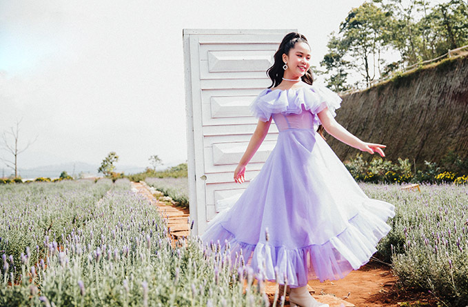

8 bước dưỡng da ban ngày của phụ nữ Hàn Quốc
PNO - Thói quen chăm sóc da của phụ nữ Hàn Quốc chủ yếu tập trung vào việc giữ cho da đủ nước, điều này còn quan trọng hơn cả trang điểm.
1. Rửa sạch mặt bằng nước lạnh: Buổi sáng thức dậy, phụ nữ Hàn sẽ dùng nước lạnh để rửa mặt và không sử dụng thêm bất kỳ sản phẩm tẩy rửa nào. Nước không chỉ làm cho làn da của bạn sảng khoái mà còn loại bỏ các tạp chất đọng lại trong đêm trên da mặt đã, và cũng có tác dụng giữ cho làn da ''ngậm'' nước.
2. Sử dụng toner: Sau khi rửa mặt sạch bằng nước, phái đẹp xứ kim chi sẽ thoa toner. Bạn có thể chấm toner lên bông và thoa theo chuyển động tròn đều khắp da mặt hoặc đổ dung dịch ra lòng bàn tay và vỗ nhẹ lên mặt. Toner giúp cân bằng độ pH trên da và đảm bảo hấp thụ tốt các sản phẩm chăm sóc da tiếp theo.

3. Thoa tinh chất: Tinh chất là sự pha trộn của huyết thanh, toner và kem dưỡng ẩm và là một phần quan trọng của chế độ chăm sóc da 8 bước của phụ nữ Hàn Quốc. Tinh chất có tác dụng cung cấp độ ẩm làn da và nuôi dưỡng các tế bào da. Đổ một ít tinh chất ra lòng bàn tay và nhẹ nhàng thoa đều lên mặt.
4. Thoa tinh chất cô đặc điều trị, phục hồi khuyết điểm làn da: Cũng tương tự như toner và serum, ampoule trở thành bảo bối của hầu hết phụ nữ Hàn. Công dụng quan trọng hàng đầu của ampoule chính là khả năng nuôi dưỡng, phục hồi và tái tạo làn da từ sâu bên trong, giúp da khỏe mạnh từ gốc. Bên cạnh đó còn giúp điều trị và phục hồi da đang bị vấn đề như mụn, thâm mụn, sạm da, nám, tàn nhang... Ampoule thường được đóng trong chai thủy tinh với ống nhỏ giọt, dùng ngón tay chấm và ấn nhẹ lên khắp mặt.
5. Không thể thiếu serum: Sử dụng serum có thể giải quyết các vấn đề về da của bạn. Serum có lợi trong việc chống lão hóa và có thể làm giảm tình trạng đốm đen, tăng sắc tố, khô và nếp nhăn... Lấy một lượng serum bằng hạt đậu (hoặc hai lần bơm) và dùng đầu ngón tay ấn nhẹ nhàng lên khắp mặt.
6. Kem dưỡng vùng da dưới mắt: Khu vực da xung quanh mắt của bạn rất mỏng manh và kem dưỡng da mặt thông thường sẽ không có tác dụng. Bạn cần thoa kem dưỡng mắt để giữ nước và bảo vệ vùng da mắt suốt cả ngày. Lấy một ít kem dưỡng mắt ra đầu ngón tay và thoa từ khóe mắt trong ra các góc ngoài.
7. Dưỡng ẩm cho da: Sau khi đã thoa kem dưỡng mắt, thoa một lớp kem dưỡng ẩm lên mặt. Kem dưỡng ẩm giúp da ''ngậm'' nước, được nuôi dưỡng và rạng rỡ suốt cả ngày dài. Nếu có làn da dầu thì sử dụng kem dưỡng ẩm dạng nước, và nếu đó là làn da khô thì sử dụng kem dưỡng ẩm dạng kem. Massage nhẹ nhàng kem dưỡng ẩm khắp mặt và cổ.
8. Kem chống nắng: Bảo vệ da khỏi tia UV là điều rất quan trọng. Khi đã hoàn thành tất cả các bước trên, thoa kem chống nắng trước khi ra ngoài. Bởi điều này giúp ngăn ngừa các đốm đen, sạm da, cháy nắng, nếp nhăn... Chọn loại kem chống nắng có ít nhất SPF 30.
-- Thu Vân (theo Stylecraze) --
Ý kiến
Hãy là người đầu tiên bình luận trong bài.
Nổi bật
- 
-
#thoitrang
-
Hoa hậu nhí Bella Vũ diện 6 bộ váy quay MV ở Đà Lạt
-

-
#lifeStyle
-
Rời khỏi một cuộc tình lâu năm: tại sao lại ám ảnh bởi chuyện đáng hay không?
-

-
#fashion
-
Min House - Shop thời trang nữ được yêu thích